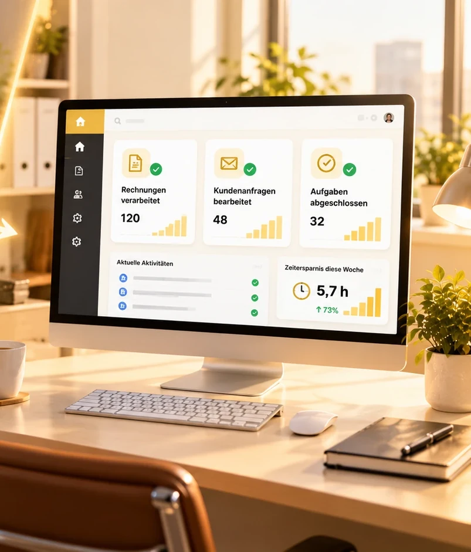
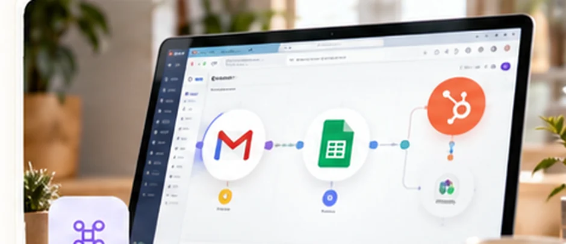
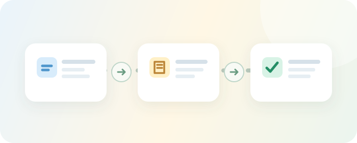
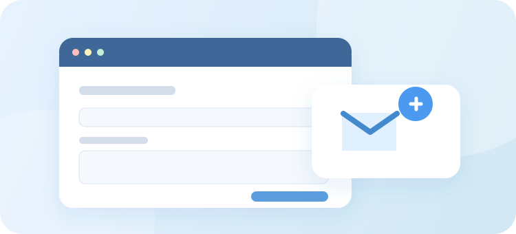
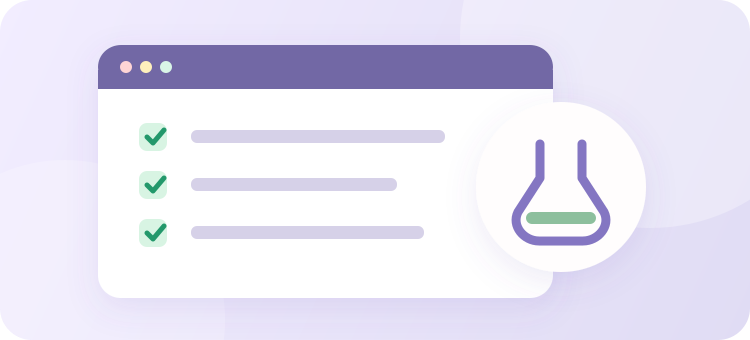

Nur ein Beispiel
Rechnungen automatisch verarbeiten
- Weniger Zeit fürs Abtippen und Ablegen
- Weniger manuelle Kosten je Rechnung möglich
- Fehlende Angaben gezielt prüfen statt alles doppelt kontrollieren
Ich automatisiere Rechnungen, Kundenanfragen und wiederkehrende Dateneingaben. So fällt weniger Handarbeit an, Ihr Team gewinnt Zeit und Bearbeitungskosten können sinken.
Starten Sie klein: kostenloses Erstgespräch, Pilotprojekte ab ca. 390 €. Ich zeige vorab die Entwicklungs- und möglichen laufenden Softwarekosten. Keine Pflicht zur monatlichen Betreuung.

Weniger manuelle Arbeit – mehr Kapazität für wichtige Aufgaben.
Geben Sie Arbeitsstunden und Stundensatz ein. Sie sehen sofort, wie viel Arbeitskapazität und rechnerischer Kostenwert freiwerden könnten.
Die Berechnung findet ausschließlich in Ihrem Browser statt.
Möglicherweise freiwerdende Arbeitszeit pro Monat
Unverbindliches Rechenbeispiel, keine garantierte Zeit- oder Geldersparnis. Freigewordene Arbeitszeit ist keine automatische Senkung Ihrer Personalkosten. Einrichtungs-, Tool- und Betreuungskosten sind nicht abgezogen; der tatsächlich automatisierbare Anteil wird erst im Projekt geprüft.
Ein klar abgegrenzter Pilot. Größere Automatisierungen werden individuell kalkuliert; eine monatliche Betreuung ist nicht verpflichtend.
In meiner praktischen Backoffice-Arbeit gehörten die Bearbeitung von rund 80–120 Belegen monatlich und die Pflege von CRM-Vorgängen zum Alltag. Durch die eingeführten Automatisierungen konnten in meinem eigenen Projekt nach meiner Schätzung etwa 7–9 Stunden Routinearbeit pro Woche reduziert werden.
Sehen Sie in meinem Demo-Video, wie ein eingehender Beleg Schritt für Schritt geprüft, ausgelesen und strukturiert abgelegt wird – mit klar definierten Prüffällen.
Die Zeitersparnis ist eine eigene Schätzung aus einem früheren Praxiseinsatz, nicht unabhängig geprüft und nicht auf andere Unternehmen übertragbar. Das Video zeigt eine separate technische Demonstration mit Beispieldaten.
Diese drei Anwendungsfälle zeigen, was möglich ist. Auch viele andere wiederkehrende Abläufe lassen sich automatisieren.
Nur ein Beispiel
Nur ein Beispiel

Nur ein Beispiel
Beschreiben Sie mir die Aufgabe in wenigen Sätzen. Ich prüfe, was sinnvoll automatisiert werden kann.
Wenn wiederkehrende Aufgaben automatisch ablaufen, benötigt Ihr Team weniger Zeit je Vorgang. Das kann die Bearbeitungskosten senken.
Zwei vorführbare Beispiele mit echten Workflows und Testdaten. Keine erfundenen Kundenbewertungen.
Sie sehen, wie ein eingehender Beleg ausgelesen, auf fehlende Felder geprüft, auf Dubletten kontrolliert und geordnet weitergegeben wird.
Sie sehen, wie n8n Daten validiert, HubSpot-Kontakte abgleicht oder anlegt und Folgeaufgaben nachvollziehbar erstellt.
Die Aufnahmen zeigen technische Demonstrationsumgebungen mit Beispieldaten. Die produktive Implementierung für Ihr Unternehmen wird individuell abgestimmt.
Sie kennen die Kostentreiber und die ungefähre Größenordnung, bevor Sie Zeit in ein Gespräch investieren.
Ein kleiner, abgegrenzter Prozess. Ideal, um die technische Machbarkeit und die Zusammenarbeit zu testen.
Konzeption, Verbindung Ihrer Tools, Prüfregeln, Tests und verständliche Übergabe.
Für Unternehmen, die ihren Workflow nicht selbst überwachen und pflegen möchten.

Sie kennen Leistungen und Kosten vorher. Im Pilot testen wir erst, ob sich die Lösung für Ihr Unternehmen lohnt.


Ein kleines Pilotprojekt zeigt, ob sich die Automatisierung technisch und wirtschaftlich lohnt.
Wir wählen einen einfachen, wiederkehrenden Teilprozess aus. Sie erhalten eine testbare Automatisierung, einen nachvollziehbaren Ablauf und eine Entscheidungsvorlage für den nächsten Schritt. Ohne automatische Verlängerung und ohne verpflichtenden Folgevertrag.
Ich bin Denis Genschel und entwickle Automatisierungen für kleine und mittelständische Unternehmen. Bevor ich einen Workflow baue, möchte ich verstehen, wo heute Zeit verloren geht, wer mit den Daten arbeitet und welche Fehler im Alltag wirklich Probleme verursachen.
Diese Perspektive kommt aus meiner eigenen praktischen Arbeit: Rechnungen und Belege bearbeiten, Aufträge nachhalten, CRM-Daten pflegen und Abläufe im Backoffice organisieren. Ich kenne deshalb nicht nur die technische Seite, sondern auch die Folgen, wenn Informationen fehlen oder Vorgänge liegen bleiben.
Bei der Umsetzung arbeite ich unter anderem mit Make, n8n, HubSpot, JavaScript und REST-APIs. Ich teste auch Ausnahmen, dokumentiere die wesentlichen Schritte und erkläre die Lösung so, dass sie im Unternehmen nachvollziehbar bleibt. Sie sprechen direkt mit mir – vom ersten Gespräch über die Umsetzung bis zur Übergabe.
Mir ist ein klar abgegrenztes, sinnvoll automatisiertes Problem lieber als ein großes Projekt ohne nachweisbaren Nutzen. Deshalb biete ich zunächst auch kleine Pilotprojekte an.
Falls Ihre Frage nicht dabei ist, klären wir sie gerne im kostenlosen Erstgespräch.
Sie schildern die Aufgabe, die beteiligten Programme und das ungefähre Volumen. Ich bespreche mit Ihnen mögliche Ansätze und offene technische Fragen. Wenn es sinnvoll erscheint, erhalten Sie anschließend auf Wunsch ein individuelles Angebot. Ohne Kaufverpflichtung.
Einmalige Entwicklungs- und Einrichtungskosten sowie gegebenenfalls laufende Gebühren der verwendeten Software. Eine monatliche Betreuung durch mich ist optional und wird separat vereinbart.
Nein. Die entwickelte Automatisierung kann je nach eingesetzter Infrastruktur nach Übergabe auch eigenständig betrieben werden. Manche Drittanbieter rechnen ihre Nutzung monatlich ab; darüber informiere ich vorab.
Entscheidend sind Anzahl und Art der verbundenen Tools, Daten- und Prüflogik, Fehlerfälle, Testaufwand sowie vereinbarte Wartung. Ein konkretes Angebot enthält die einzelnen Leistungsbestandteile und Kosten.
Meist nicht. Ziel ist es, vorhandene Programme sinnvoll miteinander zu verbinden. Ob eine Integration technisch möglich ist, hängt von den verfügbaren Schnittstellen und Zugriffsrechten ab.
Zugriffe und Datenflüsse werden vor dem Projekt besprochen. Ich plane mit möglichst wenig erforderlichen Berechtigungen und abgestimmten Speicherorten. Datenschutz- und gegebenenfalls Auftragsverarbeitungsanforderungen werden je nach eingesetzten Diensten geklärt.
Das hängt von den beteiligten Systemen und verfügbaren Testdaten ab. Umfang, Zeitrahmen und Abnahmebedingungen legen wir vor dem Start verbindlich im Angebot fest.
Nein. Der Aufwand hängt von Datenqualität, Regeln, Ausnahmen und den vorhandenen Systemen ab. Die Beispielrechnung auf der Website ist eine Orientierung. Im Pilot prüfen wir, was realistisch automatisiert werden kann.
Beschreiben Sie mir den Ablauf in wenigen Sätzen. Sie erhalten eine persönliche Einschätzung zu Möglichkeiten, Aufwand und Kosten – kostenfrei und unverbindlich.
Kostenlose Prozesseinschätzung anfragen → Direkt per E-Mail schreiben ↗